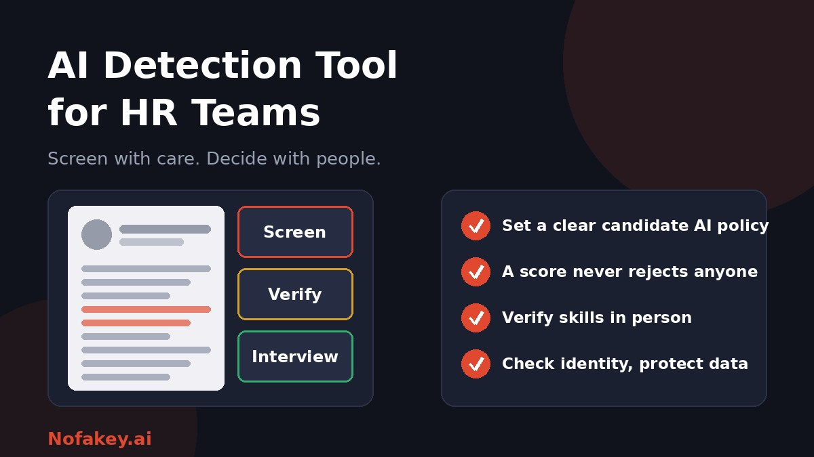

Recruiters now read polished cover letters that may have been drafted by AI, review take-home tasks that candidates may not have written alone, and join video interviews where the person on screen might not be who they say. An AI detection tool can look like a shortcut. For HR, though, the stakes are different from other fields: wrong calls affect people's livelihoods, and hiring is increasingly regulated. This guide shows how to use detection fairly and safely.
Where HR teams actually run into AI
| Area | The concern | Better approach than a score alone |
|---|---|---|
| Resumes and cover letters | Polished text that may not reflect the candidate's own voice | Focus on verifiable facts, then test skills later in the process |
| Take-home tasks and written tests | Work produced mainly by AI | Follow-up discussion where the candidate explains and extends their answer |
| Live interviews | Hidden AI assistance or an AI-altered face or voice | Unscripted questions, work-sample tasks and clear remote-interview rules |
| Identity and credentials | Fake or stolen identities, synthetic documents, deepfake candidates | Independent identity checks and reference verification |
| Internal documents | AI in performance reviews, policies and communications | Accuracy checks, disclosure rules and human accountability |
What detection tools can and cannot do for HR
- They give probabilities, not proof. A score shows resemblance to AI-like writing, not who wrote the text.
- They can be wrong in both directions. Honest candidates get flagged, and edited AI text slips through. See are AI detectors accurate?
- They are weak on short or formulaic text, and resumes are often short lists of bullet points.
- Some candidates may be flagged more often, including non-native English speakers and people who write in a formal, plain style.
- AI help is not the same as dishonesty. Many candidates use AI for grammar, translation or structure, and some employers now expect that.
Step 1: Decide your policy on candidate AI use
Before you buy or run any tool, decide what you actually want. Different stages can have different rules.
| Stage | Example policy |
|---|---|
| Application documents | AI help with grammar and structure is fine. Facts must be true and in the candidate's own words about their experience |
| Written assessments | State clearly whether AI is allowed. If it is, ask candidates to note how they used it |
| Live interviews | No hidden assistance, with exceptions for approved accessibility tools |
| On the job | Role-specific rules on AI use, confidentiality and disclosure |
A role that expects AI skills may reward candidates who use AI well. A rule you never explained is hard to enforce fairly.
Sample wording for candidates (adapt with legal advice)
You may use AI tools to help draft or edit your application, but everything you submit must be accurate and reflect your own experience. For assessments, we will say whether AI tools are allowed. If you used AI for any part of your work, tell us how.
Step 2: Build a fair screening workflow
- Screen on job-relevant criteria first, such as skills, experience and results.
- Treat detector output as a prompt, not a gate. Do not auto-reject, rank down or flag candidates on a score.
- Prefer verification over suspicion. Check claims in the application, such as dates, roles and achievements, and ask for specifics.
- Test skills live or in follow-up. Ask candidates to walk through their reasoning, adapt their solution or complete a short task in a controlled setting.
- Give candidates a chance to explain before any decision is based on a concern.
- Use consistent criteria for all candidates in the same role.
- Document decisions and the job-related reasons for them.
Fairness, bias and accessibility
- Watch for uneven impact. If a tool flags certain groups more often, such as non-native speakers, you may create unfair outcomes.
- Respect accommodations. Candidates may use assistive technology, spell-checkers or translation for good reasons. Make it easy to ask.
- Limit reliance on tools that infer behaviour, such as those that claim to detect hidden AI use from device or attention signals, and understand what they monitor.
- Test before use. Try a tool on writing samples from your own workforce and candidate pool, and look at errors by group.
- Keep a human in the loop for any consequential decision.
Deepfake and fake candidates in remote hiring
Remote hiring has opened the door to identity fraud, including candidates who use AI-altered faces or voices, borrowed identities or proxies in interviews. Visual glitches are not a dependable defence, so build the process around verification instead.
- Verify identity through trusted checks appropriate to your region and role, and do it consistently for every hire.
- Confirm references independently, using contact details you find yourself.
- Use unscripted interaction, such as follow-up questions, screen-shared work and a second interview with different people.
- Check consistency between the person interviewed, their documents and their later onboarding.
- Be alert to red flags: reluctance to turn on video, requests to change payment details, mismatched location or time-zone behaviour, and pressure to skip steps.
- Train recruiters and hiring managers on how impersonation works. See what a deepfake is and how to protect yourself, and brand protection against deepfake impersonation for approval rules you can reuse for payroll and bank changes.
Legal and privacy considerations
- Employment rules vary. Some places regulate automated tools used in hiring and may require notice to candidates, bias testing or human review. Rules are changing, so ask qualified employment counsel.
- Data protection applies. Candidate documents are personal data. Know what a vendor stores, for how long, and whether it uses submissions for training.
- Be transparent. Tell candidates in your privacy notice if tools analyse their materials, and why.
- Consent and monitoring. Tools that monitor candidates during interviews raise extra privacy questions. Get advice before using them.
- Retention. Delete results and files you no longer need, according to your policy and the law.
This guide is general information, not legal advice.
If you do choose a detection tool
Many vendor pages claim high accuracy. Check for yourself with questions such as:
- Have you tested it on your own writing samples, including short texts and non-native English?
- Does it give explanations, not only a number, and say clearly that results are not proof?
- Does it integrate with your applicant tracking system without creating automatic rejections?
- What is the data handling: storage, retention, training use, region and certifications you can verify?
- How does the vendor handle bias testing and legal requirements in your regions?
- Can candidates challenge or explain a flagged result?
Our guide to a bulk AI content checker for agencies includes a calibration test that works equally well for HR, and AI detectors for publishers and editors shows a review workflow you can adapt.
What about employee documents?
Using detectors to police employees' emails or performance reviews is risky and often counterproductive. A better approach is a clear AI use policy, a rule that employees are accountable for accuracy, disclosure where it matters, and managers who talk to employees about the quality of their work. The principles in AI detector policy for universities, such as corroborating evidence, a fair hearing and an appeals route, translate well to workplaces. For labeling wording, see how to label AI-generated content.
Conclusion
An AI detection tool can help HR teams know where to look, but it cannot tell you who is the right hire or who is being dishonest. Set a candidate AI policy, verify skills and identity through human steps, watch for bias, protect data and follow local employment law. If a candidate message or job offer looks suspicious, paste it into our free checker for a quick first read, and find more guides on the Nofakey.ai blog.
Frequently asked questions
Should HR teams use AI detectors on resumes and cover letters?
They can be used as a minor prompt for a closer look, but not as an automatic filter. Detector results are unreliable, many candidates use AI legitimately, and rejecting on a score risks unfair outcomes.
Can an AI detector tell if a candidate cheated on an assessment?
Not reliably. A score is only a clue. A follow-up conversation or live exercise where the candidate explains and extends their work is far more informative.
How can HR spot a deepfake job candidate?
Do not rely on spotting visual glitches. Verify identity through trusted checks, use unscripted interactions, confirm references independently, and follow a documented process for remote hires.
Is it legal to use AI detection in hiring?
It depends on the country and how the tool is used. Some places regulate automated tools in employment and require notice, audits or human review. Ask qualified employment counsel before adopting a tool.
What should an HR policy on candidate AI use say?
State what AI help is acceptable for each stage, what must be disclosed, how concerns are handled, and how candidates can respond or request accommodations.
Got a suspicious message or job offer to check?
Run it through the checker